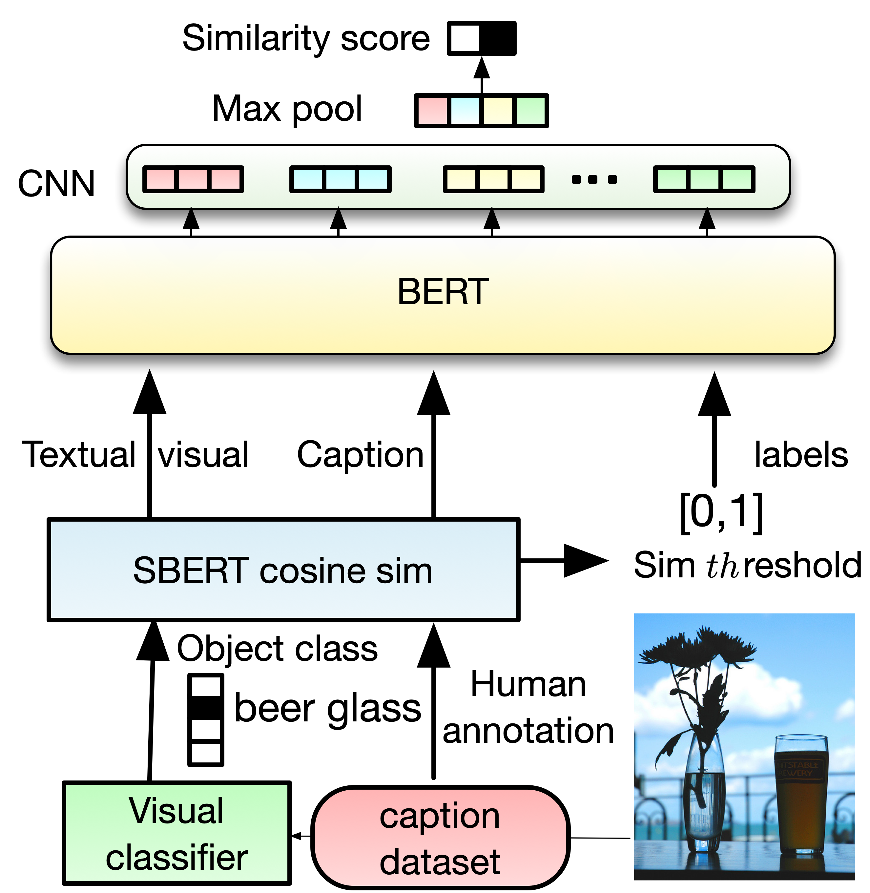

Visual Semantic Relatedness Dataset for Image Captioning |
| Ahmed Sabir, Francesc Moreno-Noguer, Lluís Padró |

|
|
|
|
Visual Semantic Relatedness Dataset for Image Captioning |
| Ahmed Sabir, Francesc Moreno-Noguer, Lluís Padró |
|
|
|
|
Modern image captaining relies heavily on extracting knowledge, from images such as objects, to capture the concept of static story inthe image. In this paper, we propose a textual visual context dataset for captioning, where the publicly available dataset COCO caption (Lin et al., 2014) has been extended with information about the scene (such as objects in the image). Since this information has textualform, it can be used to leverage any NLP task, such as text similarity or semantic relation methods, into captioning systems, either as anend-to-end training strategy or a post-processing based approach.
|
We enrich COCO-caption with textual Visual Context information. We use ResNet152, CLIP and Faster R-CNN to extract object information for each COCO-caption image. We use three filter approaches to ensure quality of the dataset (1) Threshold: to filter out predictions where the object classifier is not confident enough, and (2) semantic alignment to with semantic similarity to remove duplicated object. (3) semantic relatedness score as soft-label: to grantee the visual context and caption have strong relation, we use Sentence RoBERTa-SBERT uses siamese network to derive meaningfully sentence embedding that can be compared via cosine similarity to give a soft label via cosine similarity with threshold to annotate the final label (if th > 0.2, 0.3, 0.4 then 1,0). Finally, to take advantage of the overlapping between the visual context and the caption, and to extract global information from each visual, we use BERT followed by a shallow CNN (Kim, 2014). Here is a Colab demo |
DatasetWe proposed a variation of the COCO dataset and baseline BERT-CNN.  Training dataCOCO
visual from image, caption descriptions
umbrella dress human face, a woman with an umbrella near the sea.
bathtub tub,this is a bathroom with a jacuzzi shower sink and toilet.
snowplow shovel,the fire hydrant is partially buried under the snow.
desktop computer monitor,a computer with a flower as its background sits on a desk.
pitcher ballplayer, a baseball player preparing to throw the ball.
groom restaurant,a black and white picture of a centerpiece to a table at a wedding
|
|
OverlapingCOCO
visual from image, caption descriptions, overlapping information
pole streetsign flagpole,a house that has a pole with a sign on it,{'pole'}
stove microwave refrigerator,an older stove sits in the kitchen next to a bottle of cleaner,{'stove'}
racket tennis ball ballplayer,a tennis player swinging a racket at a ball,{'tennis', 'racket', 'ball'}
grocery store dining table restaurant,a table is full of different kinds of food and drinks,{'table'}
|
|
Gender NaturalCOCO
visual from image, caption descriptions
pizza, a person cutting a pizza with a fork and knife
suit, a person in a suit and tie sitting with his hands between his legs.
paddle, a person riding a colorful surfboard in the water.
|
|
unsupervisedCC
some tea in a wooden bowl with a scoop and blue flowers next to it
two women standing side by side at an event holding their certificates
an elderly man rides a bicycle in the street while people walk around
the soccer player has his arms up as he is celebrating
a stream runs through a forested green and leafy area
two teams of men playing a game in a basketball court
three ladies looking at something while sitting next to each other
there is a shark swimming in the blue water
|
Contact: Ahmed Sabir